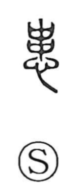

患

Uncategorized
Kun: wazurau, ureeru | On: kan
to suffer from ・ to worry ・ illness
Explanation
A phono-semantic graph: the top element is 串 (closely related to 毌 and to 貫 when paired with 貝), originally depicting shells strung and bound together—shells that served as money in antiquity. Set above 心 “heart,” it not only supplies the sound kan but also evokes the uneasy state born of such precarious wealth: bound shells knock against one another and chip, prompting anxiety and fretting. From this sense of worry and trouble the meaning extended to illness, viewed as the most intense source of concern; hence compounds like byokan (病患) come to mean “disease.” The character thus began with the idea of economic anxiety and broadened to general affliction.